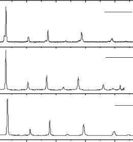
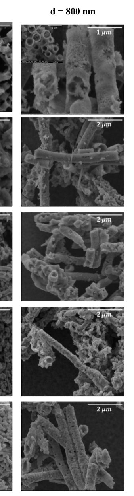
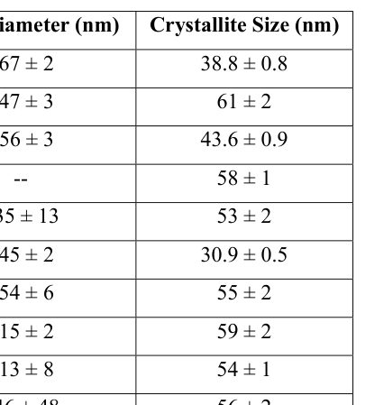
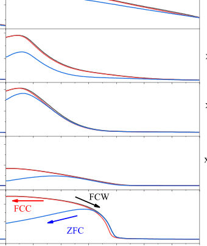
Authors: Petr Rozhin, Emma Contin, Danae Katrisoti, Till Weickhardt, Muhammad Sufyan Ramzan, Micol Bertolotti, Nouha Loudhaief, Bing Wu, Zdeněk Sofer, Takashi Taniguchi, Kenji Watanabe, Leonardo Puppulin, Stefano Dal Conte, Caterina Cocchi, Ioannis Paradisanos, Giancarlo Soavi, Giovanni Antonio Salvatore, Domenico De Fazio
Type: both · Category: other · PDF: https://arxiv.org/pdf/2605.13211v1
Analysis basis: full PDF text, analyzed in chunks
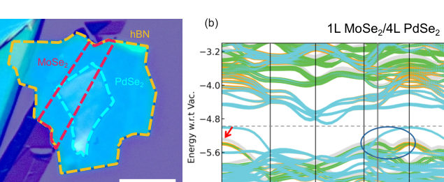
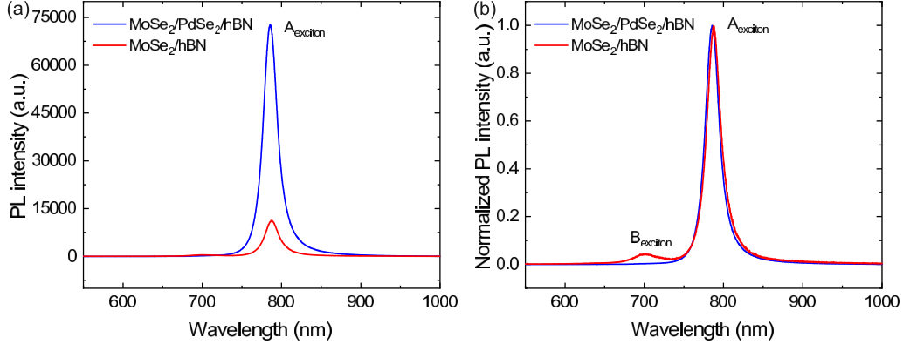
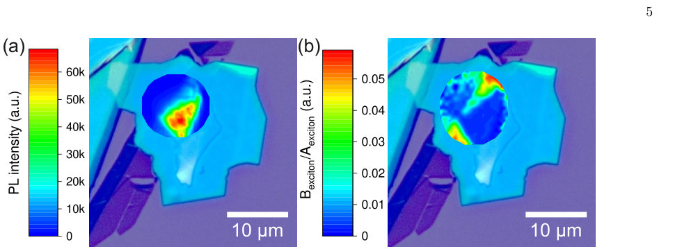
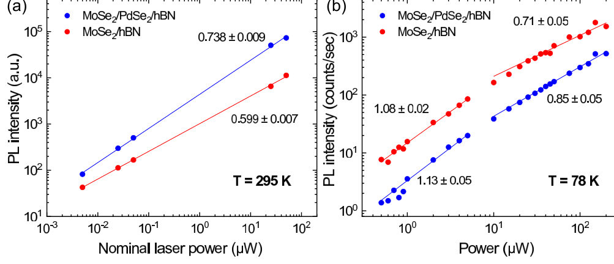
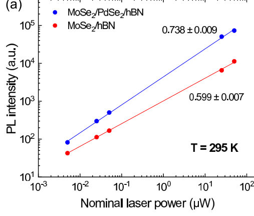
Summary. The researchers demonstrate that placing MoSe2 in contact with PdSe2 significantly boosts its light emission efficiency at room temperature. This is achieved through interlayer electronic coupling that redirects excitons into radiative pathways, offering a non-invasive way to engineer 2D optoelectronic devices.
Why it may be interesting. not directly relevant
Main problem. How to efficiently control exciton recombination and enhance photoluminescence quantum yield in 2D semiconductors without using invasive methods like chemical doping or strain.
Main result. A 6-fold enhancement of room-temperature A-exciton emission in MoSe2/PdSe2 heterostructures is achieved via interlayer electronic coupling that redistributes exciton populations toward radiative channels.
Method. The study combines experimental optical spectroscopy (PL, PLE, power/temperature-dependent PL) and structural characterization (AFM, Raman) with ab initio DFT simulations.
Model / system. A van der Waals heterostructure consisting of a monolayer of MoSe2 and a multilayer (approx. 6L) of PdSe2 on an hBN substrate.
Key observables. Photoluminescence quantum yield (PLQY), A-exciton and B-exciton emission intensities, B/A intensity ratio, and power-law exponent for exciton-exciton annihilation.
Important parameters / regimes. Room temperature, 6-fold enhancement of PLQY, broadband enhancement range of 450-725 nm, and ~200 meV splitting between A and B excitons.
Assumptions / limitations. The 4L PdSe2 model used in DFT is considered an efficient approximation of the 6L experimental system due to similar electronic structures.
Figures summary. Figure 1 shows the spatial arrangement of the heterostructure flakes and the electronic band structures/projected density of states. Supporting information includes Raman spectra for thickness verification.
Paper structure. The paper introduces the problem of exciton control, describes the MoSe2/PdSe2 heterostructure fabrication and characterization, presents the observed PL enhancement and B-exciton quenching, provides mechanistic evidence via power/temperature dependence and PLE, and supports the findings with DFT simulations and control experiments.
Controlling exciton recombination in atomically thin semiconductors is central to their optoelectronic functionality, as the competition between radiative and non-radiative decay channels governs emission efficiency. Existing approaches, such as defect passivation, chemical doping, dielectric engineering, and strain tuning, primarily aim to suppress non-radiative losses. Here, we report a pronounced $\sim$6-fold enhancement of room-temperature A-exciton emission in a type-I MoSe$_2$/PdSe$_2$ van der Waals heterostructure, yielding a photoluminescence quantum yield of 6 %, compared to $\sim$1 % for as-exfoliated monolayer MoSe$_2$. This enhancement is accompanied by strong quenching of the B-exciton, consistent with interlayer electronic coupling that redistributes exciton populations toward the radiative A-exciton channel. Power- and temperature-dependent measurements reveal a suppression of exciton-exciton annihilation and a crossover to quenched emission at low temperature, indicating a redistribution of exciton relaxation pathways. Photoluminescence excitation spectroscopy further reveals a broadband enhancement spanning 450-725 nm, ruling out a resonance-specific mechanism. These results demonstrate that interlayer electronic coupling can be used as an efficient means to redirect exciton populations toward radiative channels, enhancing emission efficiency in two-dimensional semiconductors without chemical modification or strain.
Authors: Arindam Boruah, Saumen Acharjee, Prasanta Kumar Saikia
Type: theory · Category: other · PDF: https://arxiv.org/pdf/2605.13317v1
Analysis basis: full PDF text, analyzed in chunks
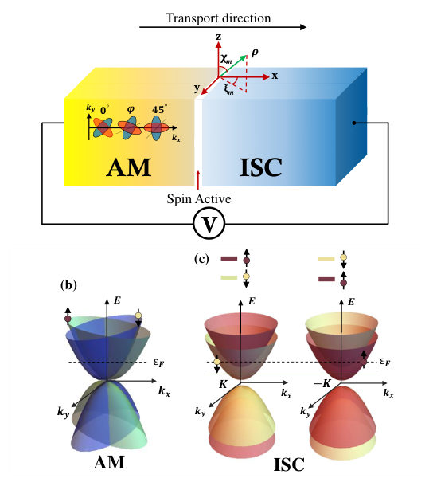
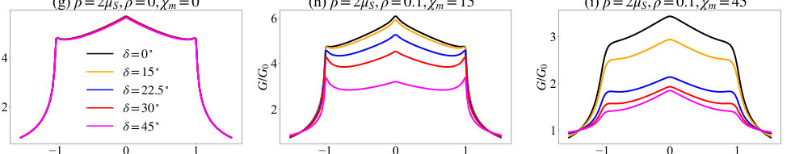
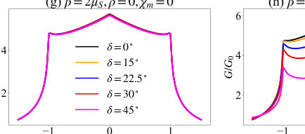
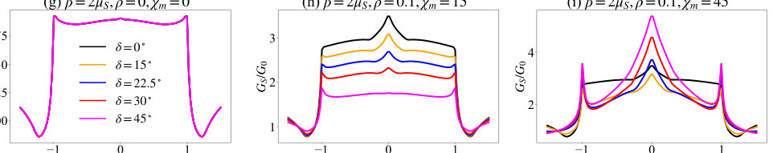
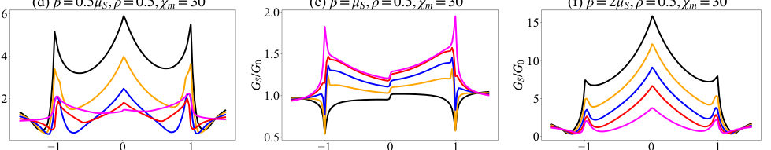
Summary. This paper explores how the unique spin textures of altermagnets and Ising superconductors can be harnessed at a spin-active interface to create highly efficient spin filters. It shows that by tuning the interface magnetization and the altermagnet orientation, one can achieve significant spin polarization and direction-dependent (nonreciprocal) transport, providing a platform for superconducting spintronics.
Why it may be interesting. not directly relevant
Main problem. Investigating how the interplay between momentum-dependent spin splitting in altermagnets and intrinsic spin-orbit coupling in Ising superconductors can be used to control spin-polarized transport and nonreciprocal effects via a spin-active interface.
Main result. The study demonstrates that a spin-active interface enables tunable spin filtering (up to 86% efficiency) and nonreciprocal transport, with transport properties highly dependent on the relative orientation of the altermagnet spin texture and interface magnetization.
Method. A modified Bogoliubov-de Gennes (BdG) framework within the Blonder-Tinkham-Klapwijk (BTK) scattering formalism is used to calculate spin-resolved conductance and symmetry analysis.
Model / system. A heterostructure junction consisting of an Altermagnet (AM) with d-wave symmetry exchange field and an Ising Superconductor (ISC) with strong spin-orbit coupling, separated by a spin-active interface with spin-dependent potential.
Key observables. Spin-resolved charge and spin conductance, spin polarization (P), spin-filter efficiency (eta), and nonreciprocal transport signatures.
Important parameters / regimes. AM orientation angle (delta), interface magnetization angle (chi_m), spin-mixing strength (rho), and Ising spin-orbit coupling strength (beta).
Assumptions / limitations. The altermagnet exchange field is assumed to lie in the xy-plane; the interface is modeled as a delta-function potential.
Figures summary. Fig 1 shows the heterostructure schematic; Fig 2 shows conductance spectra vs AM orientation; Fig 5 shows conductance density plots across different ISOC regimes; Fig 6 shows angular modulation of spin polarization and efficiency; Fig 7 shows variation of parameters.
Paper structure. The paper introduces the AM/ISC junction, defines the Hamiltonian and interface model, derives the transport formalism, analyzes transport in different ISOC regimes, and discusses spin-filtering efficiency and nonreciprocity.
We investigate theoretically spin-resolved transport, spin filtering, and nonreciprocal effects in an Altermagnet/Ising superconductor (AM/ISC) junction with a spin-active interface. Using a modified Bogoliubov-de Gennes framework within the scattering formalism, we demonstrate that the interplay among intrinsic spin-orbit coupling (ISOC), anisotropic AM spin texture and spin-dependent interfacial scattering gives rise to strongly anisotropic charge and spin conductance. In the weak spin-mixing regime, transport remains predominantly helicity conserving and exhibits pronounced angular dependence governed by the relative orientation between the AM spin texture and interface magnetization. Increasing ISOC enhances spin conductance and leads to spin-selective Andreev reflection resulting in finite spin filtering. In contrast, the strong spin-mixing regime exhibits enhanced angular anisotropy and robust spin-polarized transport over a broad energy range. Conventional Andreev reflection becomes strongly suppressed, accompanied by substantial spectral redistribution. We further show that nonreciprocal transport persists throughout the single-band, intermediate and double-band ISC regime. The spin polarization and spin-filter efficiency exhibit nonmonotonic dependence on system parameters, reaching values up to $\sim 86\%$, with characteristic angular modulation determined by the AM spin texture. Finite-energy analysis reveals enhanced spin selectivity at low energies and suppression near the superconducting gap. Furthermore, strong spin mixing at the AM/ISC junction produces asymmetric conductance patterns, indicating nonreciprocal transport. Our results establish AM/ISC junctions as a versatile platform for tunable superconducting spintronics and directional spin transport.
Authors: Maciej Bazarnik, Thorsten Deilmann, Marta Przychodnia, Anika Schlenhoff
Type: both · Category: other · PDF: https://arxiv.org/pdf/2605.13637v1
Analysis basis: full PDF text, analyzed in chunks
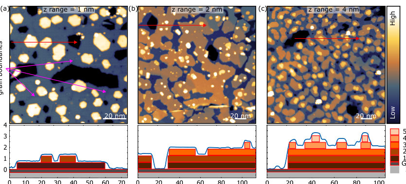
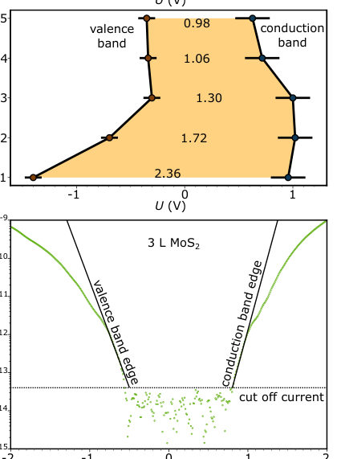
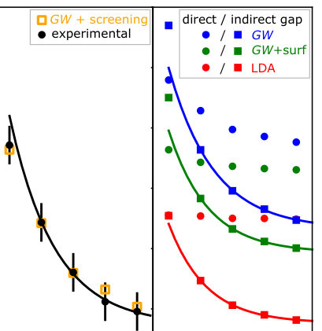
Summary. The study tracks how the electronic band gap of MoS2 changes as it grows from a single layer to five layers. It reveals that the band gap drops below the known bulk value due to extra electronic screening caused by defects like grain boundaries and stacking faults inherent in the growth process.
Why it may be interesting. not directly relevant
Main problem. Investigating the layer-thickness dependence of the electronic band gap in MoS2 from monolayer to 5 layers and determining why the 5-layer band gap is lower than the bulk value.
Main result. A drastic decrease in the band gap is observed as layer number increases, reaching values below the bulk limit, which is attributed to additional screening from growth-induced defects.
Method. Scanning Tunneling Spectroscopy (STS) was used for experimental measurement, while Density Functional Theory (DFT) and GW calculations were used for theoretical comparison.
Model / system. MoS2 layers (1 to 5 atomic layers) grown via Molecular Beam Epitally on a graphene/Ir(111) substrate using a Stranski-Krastanov growth mode.
Key observables. Band gap (Eg), conduction band and valence band edge positions relative to the Fermi level, and dI/dU differential conductance.
Important parameters / regimes. Layer thickness (1-5L), temperature (5.5 K), and screening/doping weights.
Assumptions / limitations. The theoretical model assumes a defect-free experimental structure and uses empirically estimated doping weights to match experimental data.
Figures summary. Figure 1 shows STM topographies of different coverage regimes (1-2L, 2-4L, and 3-5L); Figure 2 shows normalized dI/dU curves and extracted band gap data.
Paper structure. The paper introduces the importance of band engineering in TMDs, describes the MBE growth and STM/STS experimental setup, presents the thickness-dependent band gap measurements, compares results with DFT/GW calculations, and concludes with a discussion on the role of growth-induced screening.
In light of the rise of transition metal dichalcogenides as 2D semiconductors for device applications, band engineering becomes very important from an application point of view. In many of these materials, such as the canonical example of MoS$_{2}$, the semiconductor band gap depends on the layer number. It changes from indirect to direct as it evolves from a bulk semiconductor to a monolayer. Interestingly, it was predicted and experimentally confirmed that, by thinning the material from bulk to a bilayer, the indirect transition shows a strong blue-shift. Here, we present the results of scanning tunnelling spectroscopy measurements on MoS$_{2}$ that has been grown \textit{in situ} via molecular beam epitaxy on graphene on Ir(111) at thicknesses ranging from 1 to 5 layers. We find a drastic decrease of the band gap with increasing layer number, to values even below the band gap in bulk. We also observe that the pinning of the conduction band vanishes above 4 layers. Comparing our experimental data with density functional theory and \textit{GW} calculations indicates that an additional screening is introduced by the sample growth conditions.
Authors: Runchen Zhou, Payam Edalati, Anthony Alhayek, Shivam Dangwal, Marc Novelli, Md. Amirul Islam, Baran Bidyut Saha, Thierry Grosdidier, Kaveh Edalati
Type: experiment · Category: other · PDF: https://arxiv.org/pdf/2605.13184v1
Analysis basis: full PDF text, analyzed in chunks
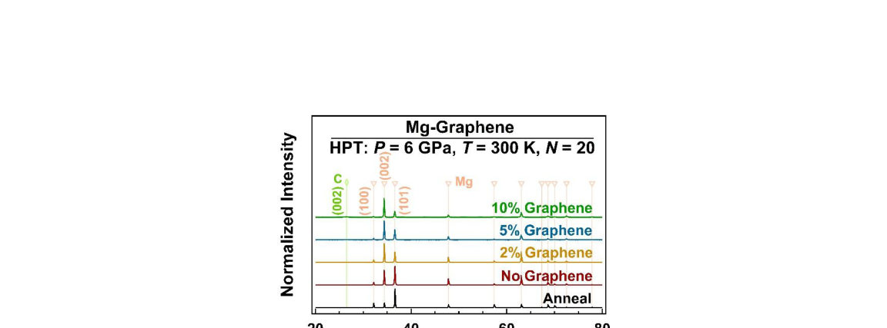
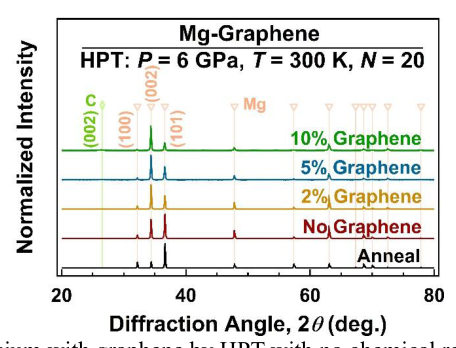
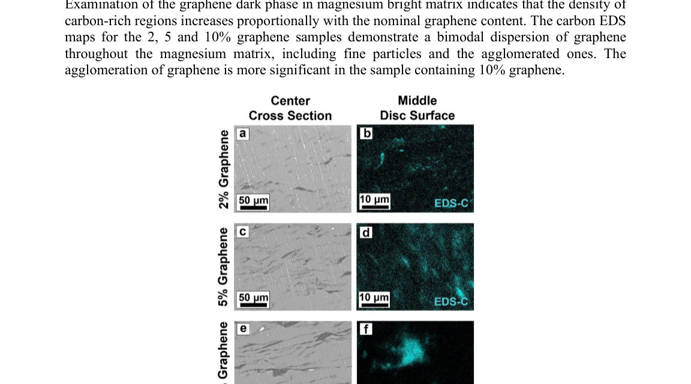
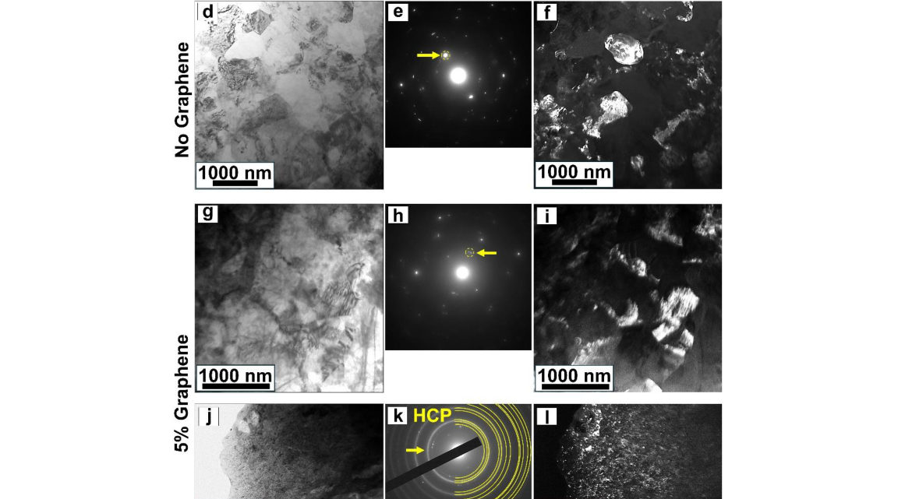
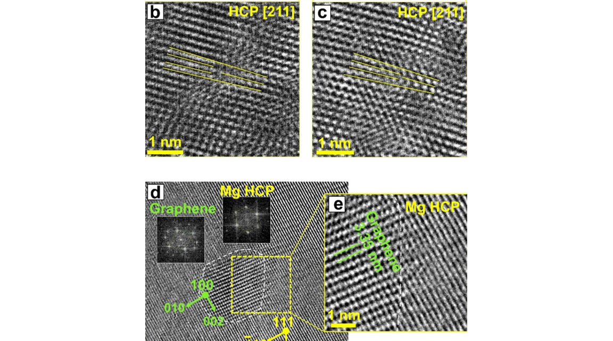
Summary. This paper demonstrates a method to speed up hydrogen storage in magnesium by using high-pressure torsion to create magnesium-graphene interfaces. These interfaces act as high-speed pathways for hydrogen diffusion, significantly increasing the reaction frequency without changing the energy barrier.
Why it may be interesting. not directly relevant
Main problem. The slow hydrogen absorption and desorption kinetics of magnesium, which is a promising but kinetically limited hydrogen storage material.
Main result. Creating magnesium-graphene interphase boundaries via high-pressure torsion enhances hydrogen storage kinetics by significantly increasing the frequency factor, without altering the activation energy.
Method. High-pressure torsion (HPT) is used for severe plastic deformation and grain refinement, followed by Sieverts-type measurements for kinetics and Kissinger analysis for thermal parameters.
Model / system. Magnesium (Mg) and magnesium-graphene composites (0, 2, 5, and 10 wt% graphene) processed via high-pressure torsion to create nanostructured bimodal morphologies.
Key observables. Hydrogen absorption/desorption rates, hydrogen storage capacity (wt%), activation energy (Ea), frequency factor (A), and grain size.
Important parameters / regimes. Temperature (623 K), hydrogen pressure (4.03 MPa absorption, 0.01 MPa desorption), and graphene weight percentage.
Assumptions / limitations. The study assumes that the kinetic improvement is driven by the density of active sites rather than changes in the fundamental energy barrier.
Figures summary. XRD profiles for phase identification; SEM/EBSD/TEM images showing grain refinement and graphene distribution; DSC/TGA data for thermal analysis; and Kissinger plots showing changes in the frequency factor.
Paper structure. Introduction of the kinetic bottleneck; experimental synthesis via HPT; microstructural characterization (XRD, SEM, TEM); hydrogen storage kinetic measurements; kinetic modeling and Kissinger analysis; and discussion of the mechanism shift from 3D reaction to 2D diffusion.
A strategy to overcome sluggish hydrogenation/dehydrogenation of magnesium is demonstrated by creating magnesium-graphene interphase boundaries via high-pressure torsion (HPT). HPT reduces the grain size of pure magnesium from 1 mm to 850 nm, with 70% of grain boundaries having high misorientation angles. Graphene addition leads to even finer grain sizes of 10-500 nm with a bimodal morphology. The magnesium-graphene composites exhibit superior kinetics at 623 K while maintaining high air resistance. Kinetic modeling reveals that the rate-controlling mechanism transits from interfacial reaction in coarse-grained magnesium to atomic diffusion in magnesium-graphene nanocomposites. Kissinger analysis shows that the activation energy for hydrogen desorption remains unchanged at 145 +/- 2 kJ/mol, regardless of the presence of grain or interphase boundaries. However, the frequency factor (number of successful attempts to overcome the activation energy) increases with the generation of interfaces, which serve as sites for hydrogen diffusion and heterogeneous metal/hydride nucleation. These findings highlight the impact of interphase boundary engineering via severe plastic deformation for enhancing the kinetics and air resistance of hydrogen storage materials.
Authors: Weiyi Pan, Jaroslav Fabian
Type: theory · Category: other · PDF: https://arxiv.org/pdf/2605.13763v1
Analysis basis: full PDF text, analyzed in chunks
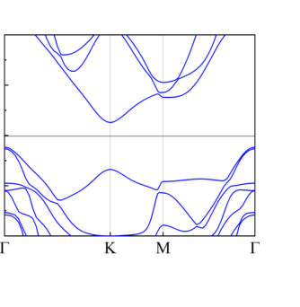
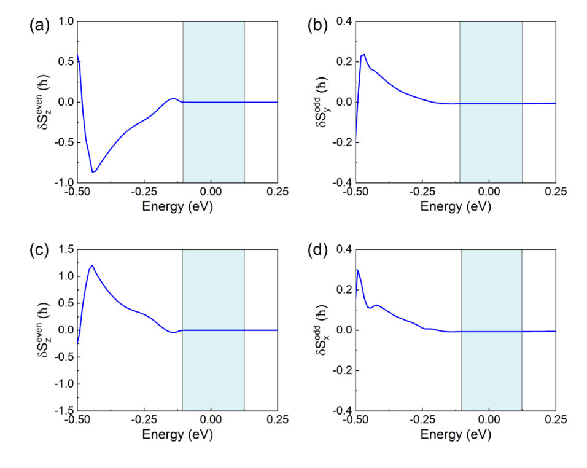
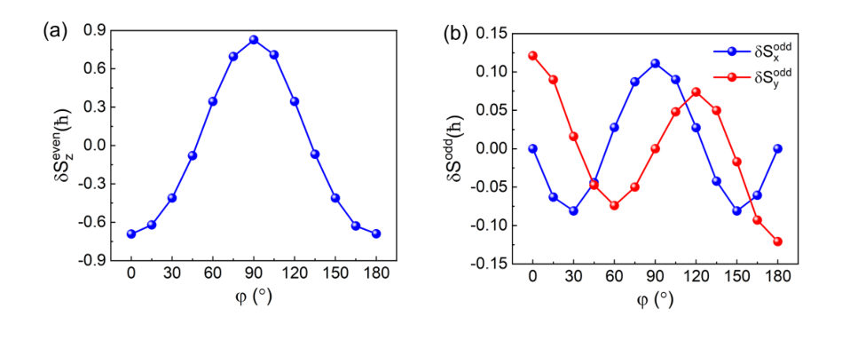
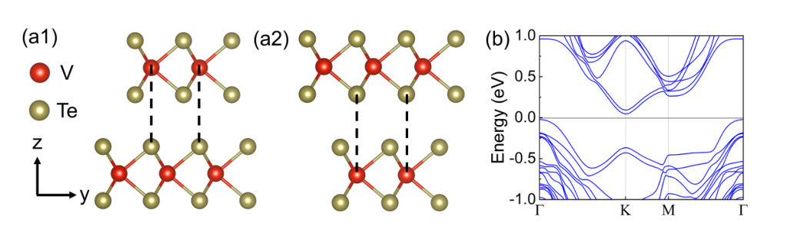
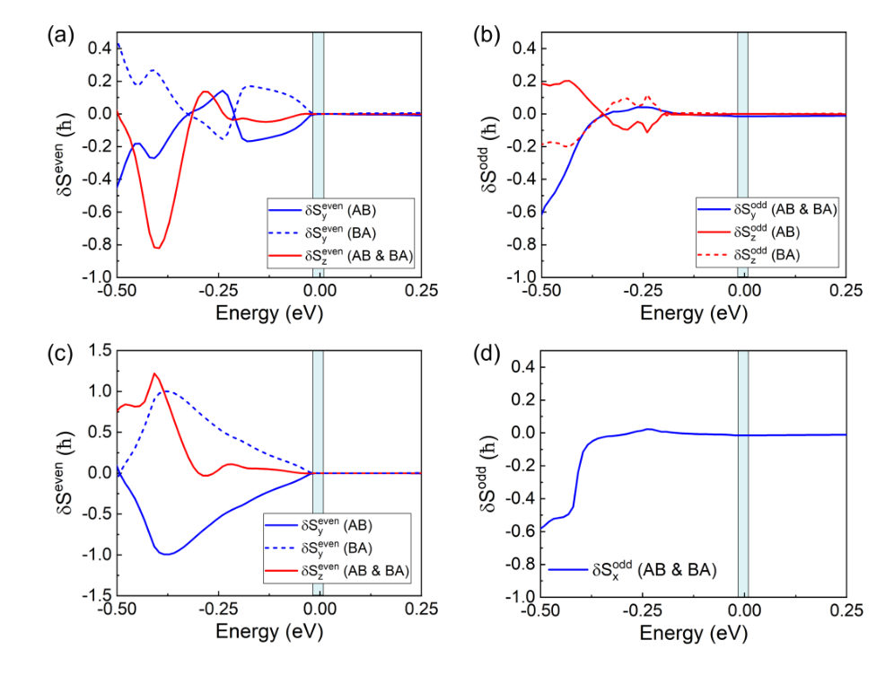
Summary. This paper explores how the Edelstein effect in the 2D magnet 2H-VTe2 can be tuned by rotating magnetization or changing the stacking configuration of bilayers. It identifies a mechanism for nonvolatile control of spin-orbit torque through interlayer sliding. These findings suggest 2H-MX2 materials are promising for high-efficiency, multifunctional spintronic devices.
Why it may be interesting. not directly relevant
Main problem. Investigating how the Edelstein effect (current-induced spin accumulation) in 2D magnetic systems can be controlled via magnetization orientation and crystal symmetry (stacking configuration).
Main result. The study demonstrates that in 2H-VTe2, the Edelstein effect is magnetization-dependent and that additional spin components can be reversibly switched by changing the stacking from AB to BA via interlayer sliding.
Method. First-principles calculations using Quantum Espresso, Wannier90, and WannierTools, with the Edelstein response tensor evaluated using the Kubo formula via the Linres code.
Model / system. The system is the 2D in-plane ferromagnetic semiconductor 2H-VTe2, analyzed in both monolayer (D3h symmetry) and bilayer (C3v symmetry) configurations with AB and BA stacking.
Key observables. Edelstein response tensor (chi), spin accumulation components (delta S_x, delta S_y, delta S_z), and time-reversal-even/odd contributions.
Important parameters / regimes. Fermi energy (Ef), magnetization angle (phi), electric field (E), and Hubbard U = 1 eV.
Assumptions / limitations. The reference electric field of 1 V/A used in calculations is noted as difficult to realize experimentally; calculations assume a specific thickness for monolayer and bilayer.
Figures summary. Figure 1 shows atomic structure and band structure; Figures 2-3 show symmetry-allowed spin components for monolayers; Figures 4-6 show bilayer structures and stacking-dependent spin accumulation; Figures 7-11 show k-resolved spin accumulation and angular dependence.
Paper structure. The paper introduces the problem of spintronic efficiency, presents the structural and electronic properties of 2H-VTe2, analyzes the monolayer symmetry and spin response, extends the analysis to bilayer stacking and its tunability, and concludes with the generalizability of the findings to other 2H-MX2 materials.
The Edelstein effect in magnetic systems enables magnetization switching via the coupling between current-induced spin accumulation and intrinsic magnetic order, and is therefore highly promising for next-generation spintronic devices. Realizing and manipulating the Edelstein effect in two-dimensional (2D) magnetic systems is particularly desirable for achieving high-efficiency and multifunctional spintronic applications. In this work, based on first-principles calculations and symmetry analysis, we demonstrate that the Edelstein effect can intrinsically arise in the 2D in-plane ferromagnetic semiconductor 2H-VTe2, with its behavior strongly dependent on the magnetization orientation. For monolayer 2H-VTe2 with D3h crystal symmetry, under an applied current along the +x direction, only the time-reversal-even z component and the time-reversal-odd y(x) component of the spin accumulation are allowed when the magnetization is aligned along +x (+y). For ferromagnetic bilayer 2H-VTe2 in AB or BA stacking, where the crystal symmetry is reduced to C3v, additional spin components emerge with the presence of in-plane magnetization. Specifically, for magnetization along +x (+y), besides dSz_even and dSy_odd (dSz_even and dSx_odd), extra components such as dSy_even and dSz_odd (dSy_even) become allowed. Notably, these additional components can be reversibly switched by changing the stacking configuration from AB to BA via interlayer sliding. Our results not only deepen the understanding of current-induced spin accumulation in 2D magnetic systems from both symmetry and first-principles perspectives, but also identify 2H-MX2 materials as a promising platform for realizing intrinsic and tunable Edelstein effects in high-efficiency spin-orbit torque devices.
Authors: Fabiana N. Morales Alvarez, Mariano Quintero, Joaquín Sacanell
Type: experiment · Category: strongly correlated electrons · PDF: https://arxiv.org/pdf/2605.13611v1
Analysis basis: full PDF text, analyzed in chunks




Summary. The study demonstrates how tuning the cobalt content and the physical shape of perovskite nanostructures can enhance the magnetocaloric effect. By using template-assisted synthesis, the researchers achieved higher magnetic entropy changes suitable for intermediate-temperature refrigeration applications.
Why it may be interesting. not directly relevant
Main problem. Optimizing the magnetocaloric effect (MCE) in nanostructured perovskites by controlling both chemical substitution (Co-doping) and morphological features (nanotube/nanowire diameter).
Main result. Increasing Co content enhances ferromagnetic coupling, increasing saturation magnetization and Curie temperature, with the x=1, 800nm sample achieving a maximum entropy change of 1.13 J/(kg K).
Method. Synthesis via a pore-wetting method using polymeric membranes, followed by structural characterization (XRD, SEM) and magnetic measurements (VSM) using Maxwell relations for MCE analysis.
Model / system. A series of nanostructured perovskite oxides, La0.6Sr0.4Fe1-xCoxO3, featuring rhombohedral symmetry and morphologies including nanotubes and nanowires with diameters of 200 nm and 800 nm.
Key observables. Magnetic entropy change (-delta S), saturation magnetization (MS), Curie temperature (TC), Relative Cooling Power (RCP), and coercive field (HC).
Important parameters / regimes. Cobalt substitution level (x = 0 to 1), pore diameter (200 nm vs 800 nm), and applied magnetic field (up to 3 T).
Assumptions / limitations. The use of Maxwell relations assumes the magnetic transitions are second-order, which was confirmed via Arrott plots.
Figures summary. Figure 1 shows XRD patterns; Figure 2 displays SEM micrographs of morphology evolution; Figure 3 shows magnetic properties; Figure 7 plots magnetic entropy change vs. temperature.
Paper structure. The paper introduces the research problem, describes the synthesis and characterization methods, presents structural and morphological results, details the magnetic and magnetocaloric findings, and concludes with the optimization strategy.
This work presents a systematic study of the magnetocaloric effect in the nanostructured perovskite series $La_{0.6}Sr_{0.4}Fe_{1-x}Co_{x}O_3$ (x = 0, 0.2, 0.5, 0.8, and 1.0), synthesized by a pore-wetting method using polymeric membranes with pore diameters of 200 nm and 800 nm. All samples were calcined at 1000°C. Structural characterization was made by X-ray diffraction and confirmed the formation of a single-phase perovskite with distorted rhombohedral symmetry, without detectable secondary phases. We observed significant influence of substitution of Fe by Co on the morphology, as the analysis by scanning electron microscopy revealed a clear evolution from smaller to larger particles and from thin to thicker nanotubes, as the Co content increased. Magnetic measurements showed that the cationic substitution enhances ferromagnetic coupling, increasing both the saturation magnetization (MS) and the Curie temperature (TC). The magnetocaloric properties, determined through the Maxwell relations, exhibit a maximum entropy change of 1.13 J/(kg K) under an applied field of 3 T for the sample with x = 1. These results demonstrate that the combination of Co doping and controlled nanostructuring effectively optimizes the magnetocaloric response.
Authors: Zheng-Hong Li, Yung-Ting Lee, Yu-Chan Tai, Cheng-Tien Chiang, Chien-Cheng Kuo, Meng-Kai Lin, Chun-Liang Lin, Hung-Chung Hsueh, Ming-Chiang Chung, Po-Tuan Chen, Chi-Cheng Lee
Type: theory · Category: strongly correlated electrons · PDF: https://arxiv.org/pdf/2605.13458v1
Analysis basis: full PDF text, analyzed in chunks
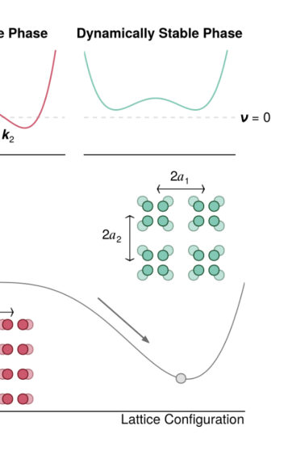
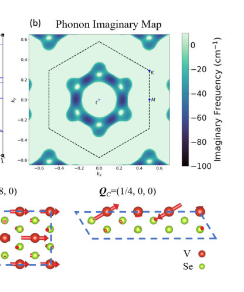
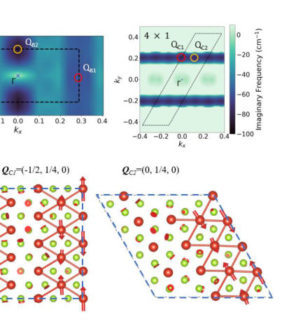
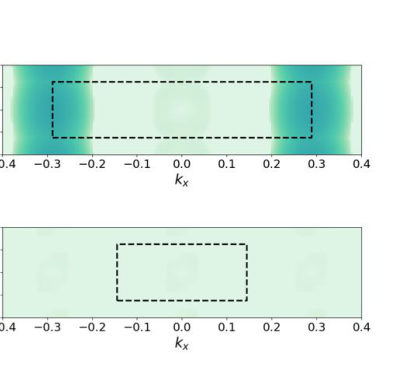
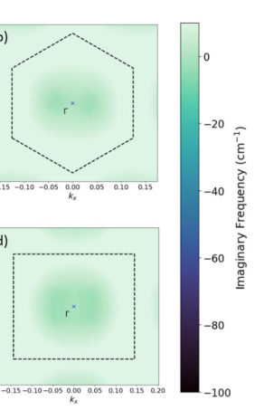
Summary. This paper reveals that the complex variety of charge density wave phases in monolayer VSe2 is not a collection of isolated states, but a continuous cascade of structural transitions driven by phonon instabilities. By tracking how different unstable modes lead to the same stable ground state, the authors provide a systematic framework for understanding hierarchical phase formation in 2D materials.
Why it may be interesting. not directly relevant
Main problem. Understanding the complex, hierarchical structural evolution and the causal relationships between competing Charge Density Wave (CDW) phases in monolayer 1T-VSe2.
Main result. The study identifies a phonon-driven cascade mechanism where multiple unstable wave vectors drive sequential symmetry-lowering distortions that eventually converge toward a common, low-energy stable configuration.
Method. First-principles Density Functional Theory (DFT) calculations using the OpenMX package combined with an iterative phonon-driven relaxation algorithm to identify subsequent instabilities.
Model / system. Monolayer 1T-VSe2, a two-dimensional transition-metal dichalcogenide (TMD) undergoing structural phase transitions.
Key observables. Phonon dispersion/spectra, imaginary-frequency phonon modes, CDW ordering vectors (Q-vectors), and total energy changes.
Important parameters / regimes. Wave vectors QA, QB, and QC; supercell sizes; energy reduction per atom (meV/atom).
Assumptions / limitations. The study relies on the accuracy of the GGA-PBE exchange-correlation functional and the finite-displacement method for phonon calculations.
Figures summary. Figure 1 shows a schematic of the phonon-driven cascade including phonon dispersions and lattice distortions; Figure 2 displays the phonon dispersion of the pristine phase along high-symmetry paths.
Paper structure. The paper introduces the problem of CDW hierarchy, describes the DFT and iterative phonon analysis methodology, presents the identification of first-generation and second-generation CDW phases, demonstrates the convergence of different pathways to a common ground state, and concludes with a unified framework for CDW formation.
Charge density wave (CDW) formation in two-dimensional materials is governed by complex competing lattice instabilities that remain incompletely understood. Here, we investigate the structural evolution of monolayer $\mathrm{1T-VSe}_{2}$ using first-principles electronic and phonon calculations. The pristine phase exhibits several imaginary-frequency phonon modes associated with dominant instability wave vectors $\mathrm{Q}_{CDW}$, which generate the first-generation CDW phases. Subsequent phonon analyses reveal that several of these intermediate structures remain dynamically unstable and undergo further symmetry-lowering distortions into larger superstructures. Through iterative phonon-driven relaxations, we identify multiple transformation pathways that converge toward the same low-energy $2\sqrt{3}\times4$ CDW configuration. Although these pathways originate from distinct intermediate CDW states, they ultimately reach nearly degenerate energetically stable phases, demonstrating that different phonon-driven routes can lead to the same ground-state configuration. The results establish a unified phonon-driven cascade mechanism for hierarchical CDW formation in monolayer $\mathrm{1T-VSe}_{2}$ and provide a systematic framework for understanding competing ordered phases in low-dimensional quantum materials.
Authors: Xiao Xiao, Arun Bansil
Type: theory · Category: strongly correlated electrons · PDF: https://arxiv.org/pdf/2605.13656v1
Analysis basis: full PDF text, analyzed in chunks
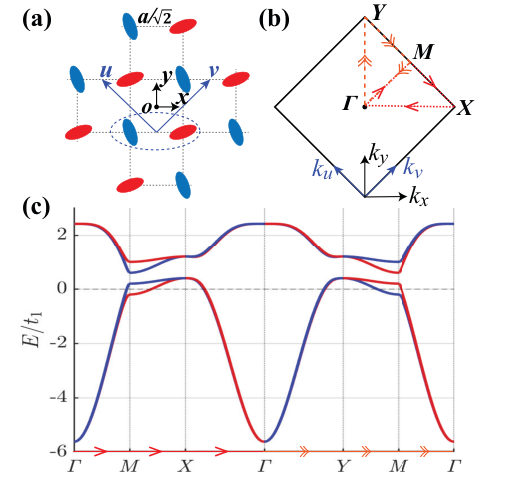
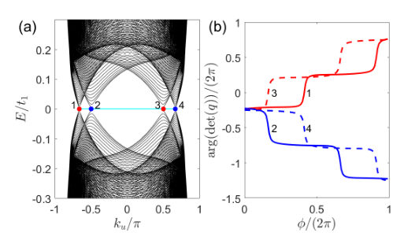
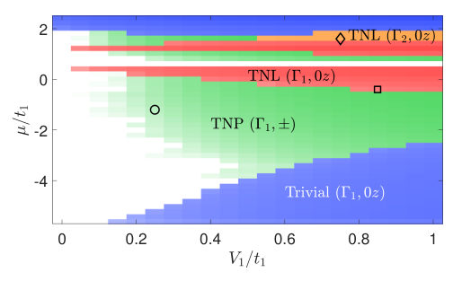
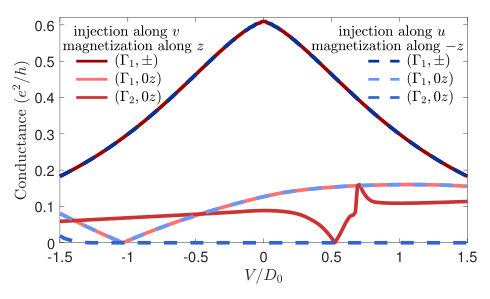
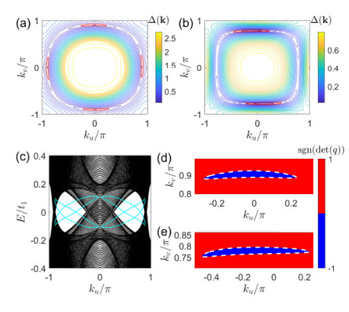
Summary. This paper demonstrates how the unique symmetry of altermagnets can naturally drive nodal topological superconductivity. It identifies specific phases hosting Majorana flat bands and edge states that are robust even when certain symmetries are spontaneously broken. The study provides specific tunneling signatures to help experimentalists identify these phases in candidate materials.
Why it may be interesting. not directly relevant
Main problem. The challenge of realizing intrinsic topological superconductivity without relying on engineered platforms, strong spin-orbit coupling, or fine-tuned symmetry breaking.
Main result. The discovery of a symmetry-driven mechanism in altermagnets where crystalline antiunitary symmetry forces spin-singlet and spin-triplet mixing, leading to robust nodal-point and nodal-loop topological superconducting phases.
Method. Group theory (projection operators and Wigner test) for pairing classification, solving the linearized gap equation using Matsubara Green's functions, and topological analysis via winding numbers and Z2 invariants.
Model / system. A two-sublattice square lattice model of fourfold rotational collinear altermagnets featuring momentum-dependent spin splitting and crystalline antiunitary symmetry (T C4z).
Key observables. Superconducting transition temperature (Tc), Majorana flat bands (MFBs), chiral Majorana edge states, and tunneling conductance signatures in altermagnet-half-metal junctions.
Important parameters / regimes. Hopping parameters (t1-t5), exchange coupling (J), chemical potential (mu), interaction strengths (V0, V1), and the gap scale (D0 = 0.1t1).
Assumptions / limitations. The analysis focuses on the regime of fourfold rotational collinear altermagnets and assumes the validity of the linearized gap equation approach.
Figures summary. Fig 1 shows the lattice and spin-split band structure; Fig 2 presents the phase diagram of superconducting instabilities; Fig 3 illustrates edge states and phase winding; Fig 4 shows gap distributions and nodal loop spectra.
Paper structure. The paper introduces the altermagnetic system, applies group theory to classify pairing channels, solves the gap equation to find instabilities, analyzes the resulting topological phases (nodal points and loops), and concludes with proposed experimental tunneling signatures.
Topological superconductivity hosts protected quasiparticles and is central to topological quantum computation, yet its realization in intrinsic materials remains challenging and often relies on engineered platforms. Here we uncover a symmetry-constrained mechanism for nodal topological superconductivity in altermagnets. Focusing on fourfold rotational collinear altermagnets, we show that the native crystalline antiunitary symmetry $\mathcal{T}C_{4z}$ generically forbids pure spin-singlet pairing and selects pairing structures that admit Bogoliubov-de Gennes (BdG) Hamiltonians with emergent chiral symmetries. These symmetries further give rise to robust nodal topological phases over broad parameter regimes, including a nodal-point phase hosting Majorana flat bands (MFBs) and two distinct nodal-loop phases with chiral Majorana edge states. Notably, the nodal structure persists even after spontaneous breaking of the antiunitary symmetry, indicating that the topology originates from symmetry-constrained pairing rather than direct symmetry protection. Finally, we propose tunneling signatures that can distinguish these nodal phases and probe symmetry breaking experimentally.
Authors: Peng Kang, Bixuan Li, Xiaoya Huang, Shuo Shi, Weiqiao Zhou, Zhen Li, Yu Liu, Lei Zheng
Type: both · Category: disordered systems and neural networks · PDF: https://arxiv.org/pdf/2605.13618v1
Analysis basis: full PDF text, analyzed in chunks
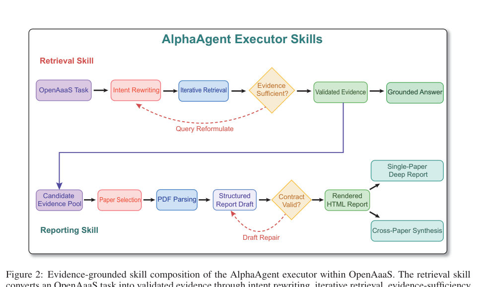
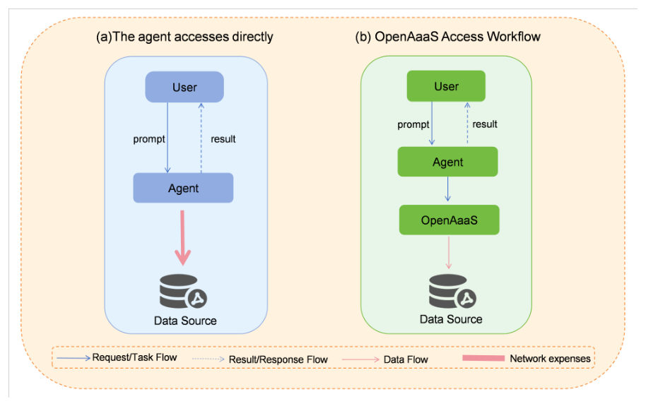
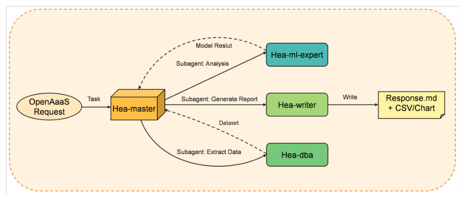
Summary. The paper introduces OpenAaaS, a framework that allows researchers to use AI agents to query and analyze materials data located at different institutions without moving the raw data. This approach preserves data privacy and solves the bandwidth bottleneck of transferring massive datasets, enabling a secure, interconnected network for automated materials discovery.
Why it may be interesting. not directly relevant
Main problem. The 'last mile' problem in materials informatics: the lack of organizational infrastructure to securely integrate specialized, proprietary, or large-scale materials data across institutional boundaries without compromising data sovereignty.
Main result. The development of OpenAaaS, a distributed Agent-as-a-Service framework that enables multi-agent collaboration using a 'code flows, data stays still' principle, successfully demonstrated via high-performance literature analysis (AlphaAgent) and secure processing of a 17.4 TB high-entropy alloy database.
Method. A three-tier hierarchical architecture (Master Agent, Network Hub, and Network Node) utilizing the Model Context Protocol (MCP) for near-data execution within Docker sandboxes to prevent raw data migration.
Model / system. An open-source distributed framework for materials informatics, featuring a Master Agent layer for task orchestration, a Rust-based Network Hub for routing, and localized Agent Cores for executing tasks near proprietary datasets.
Key observables. AlphaAgent performance scores (4.66/5.0 on analytical questions), data transfer reduction (7 orders of magnitude smaller than raw database size), and alloy ductility improvements.
Important parameters / regimes. 17.4 TB database scale, 194-dimensional descriptor vectors, 5.4 x 10^10 candidate compositions, and 50 MB file relay limit.
Assumptions / limitations. Assumes the integrity of API-key-based authentication and relies on Docker sandboxing for security; assumes that nodes can initiate outbound connections via reverse polling to bypass firewalls.
Figures summary. Figure 1 shows the hierarchical architecture of the framework; Figure 2 illustrates the AlphaAgent workflow/skill composition; Figure 3 compares centralized vs. near-data computing models; Figure 4 shows the HEA-Executor sub-agent workflow; Figure 5 demonstrates the task submission interface and results.
Paper structure. Introduction of the materials informatics 'last mile' problem, description of the OpenAaaS architecture and design principles, detailed implementation of the three-tier system, case study 1 (AlphaAgent for literature analysis), case study 2 (HEA-Executor for large-scale alloy database), and discussion of future directions and limitations.
The Materials Genome Initiative catalyzed the proliferation of centralized platforms--SaaS, PaaS, and IaaS--that aggregate computational and experimental resources for accelerated materials discovery. In parallel, breakthroughs in large language models (LLMs) and autonomous agents have created powerful new reasoning capabilities for scientific research. Yet a critical "last mile" problem remains: while we possess world-class models and vast repositories of materials data, we lack the organizational infrastructure to compose these capabilities securely across institutional boundaries. The development of structural and functional materials for harsh service environments--high-temperature alloys, radiation resistant steels, corrosion-resistant coatings--remains characterized by long-term iteration, mechanistic complexity, and high domain expertise--demands that exceed both monolithic agent systems and traditional centralized platforms. To address this gap we propose OpenAaaS, an open-source hierarchical and distributed Agent-as-a-Service framework that enables organized multi-agent collaboration for intelligent materials design. OpenAaaS is built on a single foundational principle: code flows, data stays still. A Master Agent plans and decomposes complex research tasks without requiring direct access to subordinate agents' managed data and computational resources. Sub-agents, deployed as near-data execution nodes, retain full sovereignty over local datasets, proprietary algorithms, and specialized hardware. This architecture guarantees that raw data never leaves its domain of origin while enabling cross-scale, cross-domain secure integration of previously isolated materials intelligence silos. We validate the framework through two representative case studies: (i) AlphaAgent, an evidence-grounded materials literature analysis executor that achieves 4.66/5.0 on deep analytical questions against single-pass RAG baselines; and (ii) an ultra-large-scale hexa-high-entropy alloy descriptor database service that demonstrates secure near-data execution and domain-specific scientific workflows under strict data-sovereignty constraints. OpenAaaS establishes a principled pathway toward "organized research" via agent collectives, offering a scalable foundation for next-generation materials intelligent design platforms. All source code is available at https://github.com/Wolido/OpenAaaS.
Authors: Surajit Dutta, Nadav Auerbach, Tonghang Han, Yaozhang Zhou, Gal Shavit, Niladri-Sekhar Kander, Yuri Myasoedov, Martin E. Huber, Kenji Watanabe, Takashi Taniguchi, Long Ju, Eli Zeldov
Type: both · Category: strongly correlated electrons · PDF: https://arxiv.org/pdf/2605.13303v1
Analysis basis: full PDF text, analyzed in chunks
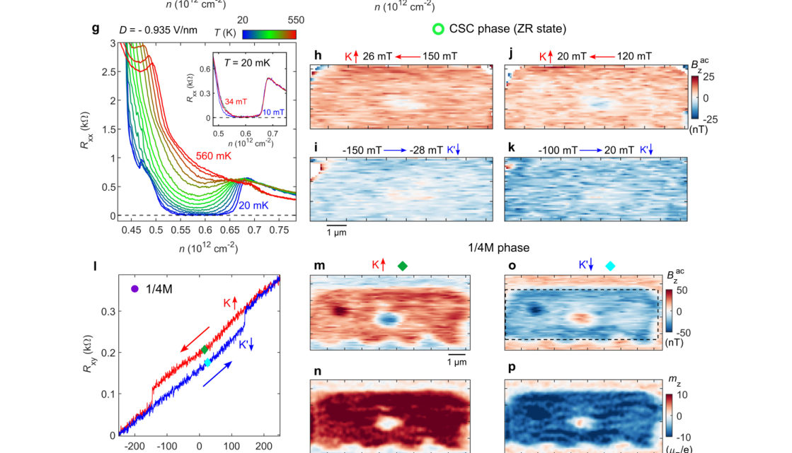
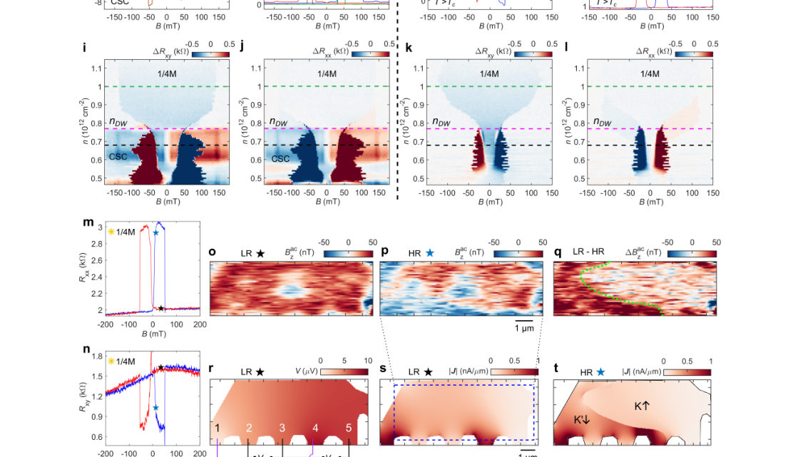
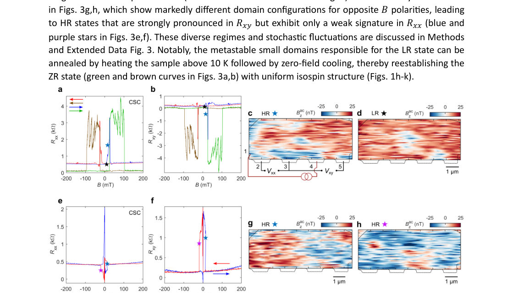
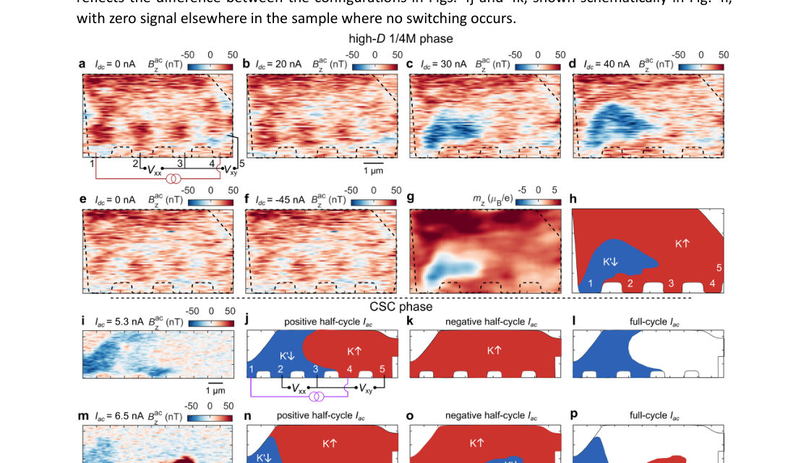
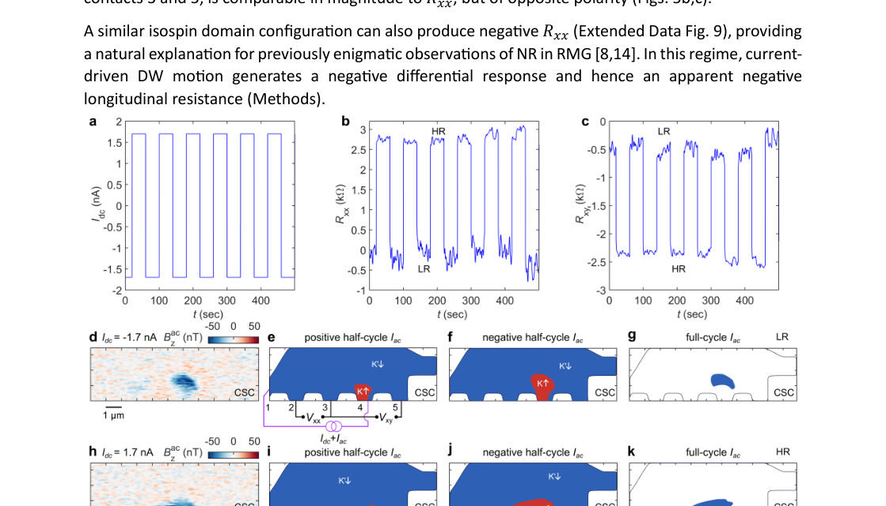
Summary. This paper provides direct magnetic evidence for chiral superconductivity in rhombohedral graphene and shows that the superconducting state inherits its domain structure from a parent isospin-polarized phase. It demonstrates that these chiral domains can be switched reversibly with extremely low currents, suggesting potential for ultra-low-power electronic functionality.
Why it may be interesting. not directly relevant
Main problem. Determining the origin of chiral superconductivity (CSC) in rhombohedral multilayer graphene and whether its time-reversal symmetry breaking is inherited from the underlying isospin-polarized parent state.
Main result. The study establishes that CSC in rhombohedral pentalayer graphene inherits its chiral domain structure from the isospin-polarized 1/4M phase and demonstrates that these domains can be deterministically reconfigured using ultra-low currents.
Method. Nanoscale SQUID-on-tip (SOT) magnetometry is used for spatial imaging of magnetic textures, combined with transport measurements and current-driven manipulation of isospin domains.
Model / system. Rhombohedral pentalayer graphene (R5G) at high displacement fields, characterized by a spin-valley-polarized quarter-metal (1/4M) phase and a superconducting phase.
Key observables. Out-of-plane magnetization (Mz), differential magnetization (mz), longitudinal resistance (Rxx), Hall resistance (Rxy), and stray field (Bz,ac).
Important parameters / regimes. Temperature (down to 20 mK), carrier density (n), displacement field (D), and current-driven switching at the nanoampere scale.
Assumptions / limitations. The switching mechanism is assumed to be driven by linear momentum transfer from reflected electrons rather than spin-transfer torque.
Figures summary. Figure 1 shows device geometry and gate control; Figure 2 illustrates transport hysteresis and the identification of domain walls; Figure 3 details the transition from bubble to system-spanning domain walls; Figure 4 and 5 demonstrate current-driven domain expansion, contraction, and resistance switching.
Paper structure. The paper introduces the R5G system, uses SOT imaging to prove TRS breaking in the CSC phase, demonstrates the inheritance of order from the 1/4M phase, analyzes the transport regimes (LR vs HR) caused by domain walls, and concludes with the demonstration of reversible, current-controlled domain reconfiguration.
Rhombohedral multilayer graphene at high displacement fields hosts superconductivity emerging from a spin valley polarized quarter metal, with transport signatures suggestive of time reversal symmetry (TRS) breaking and chiral superconductivity (CSC). These observations have motivated proposals of topological superconductivity and non-Abelian quasiparticles, yet direct magnetic evidence and microscopic insight into the superconducting state remain lacking, limiting understanding of this unique state. Here we use nanoscale SQUID on tip magnetometry to image isospin-polarized domains in rhombohedral pentalayer graphene and establish CSC via spatially resolved thermodynamic detection of TRS breaking. We find that the density at which domain walls proliferate at elevated temperatures coincides with the onset of CSC, indicating an underlying transition in the parent state that both induces superconductivity and reduces domain wall energy. We further show that the chiral domain structure in the superconducting phase is inherited from the isospin-polarized parent state. Strikingly, the CSC phase exhibits multiple transport regimes governed by configurations of chiral domains separated by highly resistive domain walls. We demonstrate deterministic, ultra low current control of these domains, enabling reversible switching between states of opposite chirality a defining CSC property absent in other superconductors. These results establish rhombohedral graphene as a unique platform for reconfigurable CSC and ultra low power electronic functionality based on controllable isospin textures.
Authors: Gordan Prastalo, Kevin Maik Jablonka
Type: theory · Category: disordered systems and neural networks · PDF: https://arxiv.org/pdf/2605.13826v1
Analysis basis: full PDF text, analyzed in chunks
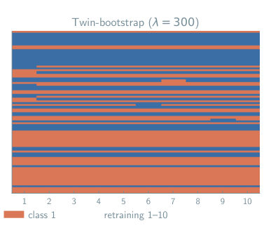
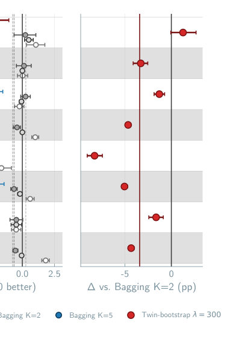
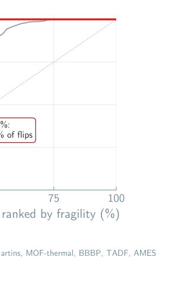
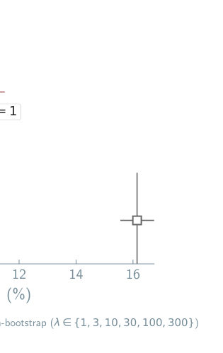
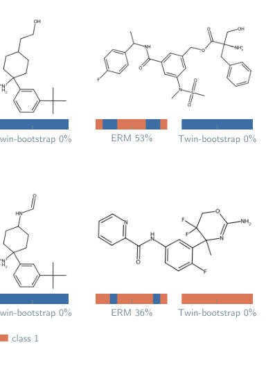
Summary. The paper identifies a hidden instability in scientific machine learning where individual predictions flip between training iterations even when accuracy remains stable. It proposes a 'twin-bootstrap' training method that uses a consistency loss to stabilize these predictions, making downstream experimental decisions more reproducible.
Why it may be interesting. not directly relevant
Main problem. The phenomenon of 'cross-sample prediction churn,' where machine learning model predictions (e.g., molecular class labels) change significantly when the model is retrained on different random draws of the same training data, despite stable aggregate accuracy.
Main result. The proposed 'twin-bootstrap' method significantly reduces prediction churn (median 65% reduction) and distributional disagreement (sym-KL) with minimal accuracy loss, outperforming standard parameter-side methods like Deep Ensembles and MC Dropout.
Method. Twin-bootstrap, which involves training two networks jointly on independent bootstraps of the training set using a symmetric KL (sym-KL) divergence consistency loss.
Model / system. The study evaluates scientific machine learning models (MLPs, GIN, ChemBERTa, ResNet) applied to chemistry and materials science datasets, including MoleculeNet, TDC ADME/Tox, and various molecular property benchmarks.
Key observables. Argmax churn (class-flip rate), symmetric KL divergence (sym-KL), Jaccard overlap of top-K predictions, and in-distribution/out-of-distribution accuracy.
Important parameters / regimes. The regularization strength (lambda) of the consistency loss and the 0.02-tolerance rule for hyperparameter selection.
Assumptions / limitations. The study assumes that bootstrapping from a single observed training set is a valid proxy for true population-level churn and that the models are trained on iid draws.
Figures summary. Figure 1 compares prediction stability between ERM and Twin-bootstrap; Figure 2 shows the relationship between churn and ERM across datasets; Figure 4 illustrates the accuracy-vs-churn Pareto frontier; Figure 5 provides a case study of class flips in BACE molecules.
Paper structure. The paper introduces the concept of prediction churn, quantifies its magnitude in chemistry benchmarks, demonstrates the failure of existing uncertainty methods, proposes the twin-bootstrap method, validates it across various architectures and tasks, and provides a rule for hyperparameter selection.
Scientific machine learning reports predictive performance. It does not report whether the same prediction would survive a different draw of training data. Across $9$ chemistry benchmarks, two classifiers trained on independent bootstraps of the same training set agree on aggregate accuracy to within $1.3\text{--}4.2$ percentage points but disagree on the class label of $8.0\text{--}21.8\%$ of test molecules. We call this gap \emph{cross-sample prediction churn}. The standard parameter-side techniques (deep ensembles, MC dropout, stochastic weight averaging) do not reduce this gap; two data-side methods do. The first is $K$-bootstrap bagging, which cuts the rate $40\text{--}54\%$ on every dataset at no accuracy cost ($K{\times}$-ERM compute). The second is \emph{twin-bootstrap}, our proposal: two networks trained jointly on independent bootstraps with a sym-KL consistency loss between their predictions, which at matched $2{\times}$-ERM compute reduces churn a further median $45\%$ beyond bagging-$K{=}2$. Cross-sample prediction churn deserves a column alongside predictive performance in scientific-ML benchmark reports, because without it the parameter-side and data-side methods are indistinguishable on the metric they actually differ on.
Authors: Yuya Haraguchi, Taishu Aoki, Daisuke Nishio-Hamane, Hiroko Aruga Katori
Type: experiment · Category: strongly correlated electrons · PDF: https://arxiv.org/pdf/2605.12986v1
Analysis basis: full PDF text, analyzed in chunks
Summary. This paper demonstrates that Cr3+ ions in a milarite-type structure occupy octahedral sites with high selectivity, preventing significant antisite exchange. It reveals that while the structure forms a honeycomb lattice, the magnetic interactions are weak because the intervening Li+ ions act as electronic insulators in the exchange path.
Why it may be interesting. not directly relevant
Main problem. The study investigates whether Cr3+ ions selectively occupy the octahedral A-site or undergo antisite exchange with the tetrahedral T2 site in a milarite-type framework, and examines the resulting magnetic connectivity.
Main result. The researchers proved that Cr3+ is selectively accommodated in the octahedral A-site with negligible T2 occupancy, and found that the magnetic connectivity is weak due to the inert Li+ ions in the exchange pathway.
Method. The study uses solid-state synthesis, Rietveld refinement of powder X-ray diffraction data, Maximum Entropy Method (MEM) analysis, and magnetic susceptibility measurements.
Model / system. The system is KNa2Cr2Li3Si12O30, a chromium analogue of the mineral sugilite, featuring a milarite-type framework with a honeycomb-like Cr sublattice and an extended Cr-O-Li-O-Cr exchange path.
Key observables. Antisite parameter (x), lattice parameters, magnetic susceptibility, Curie-Weiss temperature (theta_W), and effective magnetic moment (mu_eff).
Important parameters / regimes. theta_W = -4.78(7) K, mu_eff = 3.763(6) uB, and Cr-O distances of approximately 1.948 A.
Assumptions / limitations. The structural analysis assumes a composition-conserving antisite model for Cr/Li exchange.
Figures summary. Figure 1 shows the projected honeycomb arrangement of the Cr sublattice and the Cr-O-Li-O-Cr magnetic coupling pathway; Figure 4 displays temperature-dependent magnetic susceptibility and its Curie-Weiss fit.
Paper structure. The paper introduces the Cr-analogue of sugilite, details the synthesis and structural characterization (XRD, MEM), presents magnetic susceptibility data, and concludes with design rules for creating honeycomb and kagome magnets.
We report the synthesis of the Cr analogue of sugilite, KNa$_2$Cr$_2$Li$_3$Si$_{12}$O$_{30}$, in the milarite-type framework. Rietveld refinement of a composition-conserving antisite model gives $x = 0.0024(18)$ in KNa$_2$[Cr$_{2-x}$Li$_x$][Li$_{3-x}$Cr$_x$]Si$_{12}$O$_{30}$, corresponding to a T2-site Cr occupancy of $0.0008(6)$. X-ray MEM analysis shows no detectable Cr-like density at T2. Magnetic susceptibility indicates weak antiferromagnetic interactions with $θ_{\mathrm{W}} = -4.78(7)$ K and no ordering above 1.8 K.
Authors: A. M. Zimmerman, Saeed Fallahi, Sergei Gronin, Tyler Lindemann, Patrick Sohr, Ray Kallaher, Alejandro Alcaraz Ramirez, Georg W. Winkler, Samuel M. L. Teicher, William Cole, Sebastian Heedt, Eoin O'Farrell, Gijs de Lange, Roman Lutchyn, Michael J. Manfra, John Watson
Type: experiment · Category: quantum information and computing · PDF: https://arxiv.org/pdf/2605.13722v1
Analysis basis: full PDF text, analyzed in chunks
Summary. This paper presents a new way to quickly characterize the material properties of superconductor-semiconductor heterostructures using simple magnetoresistance measurements. By analyzing SdH oscillations, researchers can extract spin-orbit coupling and scattering times, even estimating the superconducting gap without needing ultra-low temperatures. This provides a much faster feedback loop for optimizing materials used in topological quantum computing.
Why it may be interesting. not directly relevant
Main problem. The need for a rapid, non-destructive method to characterize essential material properties (spin-orbit coupling, carrier density, and scattering times) in hybrid superconductor-semiconductor heterostructures without complex nanofabrication or mK measurements.
Main result. The authors demonstrate that Shubnikov-de Haas (SdH) oscillations can extract fundamental parameters and even estimate the proximity-induced superconducting gap by analyzing changes in scattering lifetimes.
Method. Analysis of SdH oscillations in unpatterned 2D films using high-pass filtering, FFT for subband density, and two-band conductivity model fitting.
Model / system. A hybrid nanostructure consisting of an Aluminum (Al) thin film coupled to a two-dimensional electron gas (2DEG) in an InAs or InAsSb quantum well.
Key observables. Carrier density (n), Rashba spin-orbit coupling strength (alpha), transport scattering time (tau_t), quantum scattering time (tau_q), and the ratio tau_t/tau_q.
Important parameters / regimes. Metal-semiconductor coupling strength (Gamma), proximity-induced superconducting gap (Delta_ind), and scattering regimes (long-range vs. short-range).
Assumptions / limitations. The system can be modeled as two parallel coupled electronic bands where the metal has extremely high density and low resistivity.
Figures summary. Figure 3 shows extracted parameters (SOC, density, lifetimes, and ratio) vs. Sb fraction in InAsSb; Figure 4 plots the induced gap against the transport lifetime.
Paper structure. The paper introduces the characterization problem, describes the hybrid S-Sm system and the SdH measurement methodology, validates the method using InAsSb alloying, and demonstrates the predictive power for the induced superconducting gap.
Hybrid superconductor-semiconductor nanostructures are a central component for research spanning condensed matter physics and quantum information processing. Continued progress relies critically on the ability to characterize, control, and optimize several intrinsic material properties including spin-orbit coupling, band offsets, and disorder in a device-relevant stack that necessarily couples the electronic states of a superconducting metal film and a semiconductor. Here we report a new method to extract fundamental material parameters utilizing simple Shubnikov-de Haas (SdH) oscillation measurements in heterostructures in which metallic electronic states are coupled to a two-dimensional electron gas (2DEG) residing in an InAs quantum well beneath an aluminum thin film. Proper analysis of the full magnetoresistance data facilitates extraction of the quantum well carrier density, spin-orbit coupling strength, and both transport and quantum scattering times. Most importantly, the extracted scattering times in the 2DEG are impacted by the metal-semiconductor coupling strength allowing us to quickly gain information on proximity-induced superconducting gap without any fabrication or mK measurements. The wealth of information that is accessed with these simple measurements positions this methodology as an important tool for hybrid materials optimization.
Authors: Jonas Kareem, Lorenzo Cassola, Reinier J. C. Cool, Janiek I. van Slooten, Peter A. Bobbert, Wilfred G. van der Wiel
Type: both · Category: other · PDF: https://arxiv.org/pdf/2605.13477v1
Analysis basis: full PDF text, analyzed in chunks
Summary. This paper identifies that the nonlinearity in silicon-based computing primitives arises from space-charge-limited conduction rather than disorder-induced hopping. By demonstrating that the effect is driven by the competition between injected carriers and fixed dopants, the authors provide a framework for creating reproducible, CMOS-compatible nonlinear hardware.
Why it may be interesting. not directly relevant
Main problem. The physical origin of room-temperature nonlinearity in silicon-based Reconfigurable Nonlinear-Processing Units (RNPUs) was poorly understood, with previous models incorrectly suggesting 2D variable-range hopping.
Main result. The nonlinearity is driven by space-charge effects, specifically the competition between injected carriers and fixed ionized background dopants, which creates a nonlinear electric-field profile.
Method. The study combines temperature- and length-dependent current-voltage measurements with drift-diffusion and TCAD simulations to model carrier transport and trap distributions.
Model / system. The system consists of silicon-based RNPUs with implanted boron or arsenic, featuring a silicon/native oxide interface with high surface trap density and a doping gradient created via reactive-ion etching.
Key observables. Current-voltage (I-V) characteristics, activation energy (Va), power-law exponent (alpha), crossover voltage (Vcross), and effective injected charge (Neff).
Important parameters / regimes. Ohmic, quasi-exponential, and space-charge-limited current (SCLC) regimes; interface trap density; background doping polarity; and electrode geometry.
Assumptions / limitations. The model assumes Maxwell-Boltzmann statistics for carrier concentration and assumes that high activation energy is due to interface trap-induced Fermi level pinning.
Figures summary. Figure 1 shows I-V curves and logic gate demonstrations; Figure 2 displays Arrhenius plots and band diagrams; Figure 3 presents I-V characteristics for TLM structures and SCLC schematics; Figure 4/5/6/7 show TCAD simulations of voltage scaling, dopant profiles, and device architecture.
Paper structure. The paper begins by characterizing I-V nonlinearity, identifies the role of surface traps in suppressing carriers, proposes a space-charge-limited model, validates it via TCAD simulations, and concludes with design guidelines for scalable hardware.
Reconfigurable nonlinear-processing units (RNPUs) are multi-terminal electronic devices that act as computational primitives, exploiting intrinsic nonlinear charge transport combined with electrostatic tunability. Silicon-based realizations provide a scalable and technologically relevant platform, yet the physical origin of their room-temperature nonlinearity has remained insufficiently understood. Here, we investigate charge transport using temperature- and length-dependent current-voltage measurements on physical devices, complemented by drift-diffusion simulations, and show that transport is governed by space charge. Interface trap states strongly suppress the equilibrium carrier density, while the functional nonlinearity arises from the voltage-dependent competition between injected mobile carriers and fixed ionized background dopants. The resulting non-equilibrium transport exhibits a transition from an Ohmic regime to a strongly nonlinear regime, and ultimately to a velocity-saturation space-charge-limited current regime, as evidenced by the observed voltage and length scaling. We further show that background doping of opposite polarity to the injected carriers controls the onset and strength of the nonlinearity, leading to behavior exceeding the quadratic dependence of the classical Mott-Gurney law. Agreement between experiment and simulation supports that the spatial distribution of injected carriers and fixed charge governs the internal electric-field profile and device response. These results establish a physical framework for silicon-based RNPUs without requiring disorder or hopping transport, and provide design guidelines for reproducible, scalable, and CMOS-compatible implementations of nonlinear computing hardware.
Authors: Bocheng Ruan, Jack M. Hughes, Jason J. Bramburger
Type: theory · Category: other · PDF: https://arxiv.org/pdf/2605.12605v1
Analysis basis: full PDF text, analyzed in chunks
Summary. This paper provides a rigorous theoretical framework to predict the stability of complex localized patterns in lattices by analyzing the simpler components that form them. It demonstrates that the number of unstable eigenvalues in multi-pulse or multi-dimensional structures can be calculated from the properties of individual fronts and backs. This is significant for understanding the formation and persistence of localized structures in various physical and biological media.
Why it may be interesting. not directly relevant
Main problem. The paper aims to characterize the spectral stability of localized steady-state solutions (single-pulse and multi-pulse patterns) in 1D and multi-dimensional rectangular lattice dynamical systems.
Main result. The authors develop a framework showing that the stability of complex localized structures can be determined by the stability of their constituent 'front' and 'back' components, specifically proving that the Evans function asymptotically factorizes for well-separated localization regions.
Method. The study utilizes a discrete Evans function formulation, exponential dichotomies, and Rouché's theorem to analyze the point spectrum and characterize the essential spectrum.
Model / system. The model consists of lattice dynamical systems, specifically a real-valued cubic-quintic Ginzburg-Landau lattice and Nagumo-type systems, representing phenomena in physics, biology, and materials science.
Key observables. The number and multiplicity of unstable eigenvalues (point spectrum) and the boundaries of the essential spectrum.
Important parameters / regimes. Coupling strength (theta), bistability parameter (mu), localization width (N), and lattice dimension (M).
Assumptions / limitations. The analysis focuses on steady-state solutions, assumes sufficiently large separation between localized regions, and is primarily restricted to rectangular lattice geometries.
Figures summary. Figures show steady-state solutions (fronts, backs, pulses), bifurcation diagrams illustrating 'snaking' structures, and numerical computations of the largest real-part eigenvalues for 1D and 2D patterns.
Paper structure. The paper introduces the problem of spectral stability, develops a mathematical framework using the discrete Evans function and exponential dichotomies, proves theorems regarding eigenvalue inheritance for single and multi-pulse solutions, and provides numerical demonstrations on Ginzburg-Landau and Nagumo-type lattices in 1D and 2D.
Localized patterns are spatially confined structures that arise in lattice dynamical systems and play an important role in physics, biology, and materials science. While their existence and bifurcation structure are well-understood, the stability of these solutions remains largely unexplored, particularly in discrete and high-dimensional settings. In this work, we develop a general theoretical framework to analyze the spectral stability of localized steady states in one-dimensional and multi-dimensional rectangular lattices. Our approach leverages the properties of front and back solutions, combined with a discrete Evans function formulation, to characterize the spectrum of localized solutions. We prove that, for well-separated regions of localization, the Evans function asymptotically factorizes into contributions from the underlying fronts and backs, allowing explicit counting of unstable eigenvalues. This framework applies to solutions with single or multiple plateaus, including oscillatory and multi-pulse configurations. We illustrate the results on a real-valued cubic-quintic Ginzburg-Landau lattice, a prototypical Nagumo-type system, and provide numerical demonstrations of bifurcation structures and eigenvalue spectra.
Authors: Yetkin Pulcu, János Koltai, Andor Kormányos, Guido Burkard
Type: theory · Category: other · PDF: https://arxiv.org/pdf/2605.13166v1
Analysis basis: full PDF text, analyzed in chunks
Summary. This paper demonstrates that hexagonal GeSn alloys can achieve a direct bandgap at much lower tin concentrations than the standard cubic phase. This allows for efficient tuning of the material's absorption edge into the mid-infrared, making it a promising candidate for new infrared optoelectronic devices.
Why it may be interesting. not directly relevant
Main problem. The study aims to overcome the indirect bandgap and high Sn-concentration limitations of cubic GeSn by investigating the structural, electronic, and optical properties of the hexagonal (lonsdaleite) GeSn alloy phase for mid-infrared optoelectronics.
Main result. The 2H-Ge1-xSnx alloy maintains a direct bandgap at the Gamma point even at low Sn concentrations, exhibiting strong bandgap bowing into the mid-infrared and significant optical polarization anisotropy.
Method. First-principles Density Functional Theory (DFT) using the mBJ-LDA functional and spin-orbit coupling, employing Special Quasirandom Structure (SQS) supercells and band unfolding techniques.
Model / system. The physical system is the hexagonal (2H/lonsdaleite) germanium-tin (Ge1-xSnx) random alloy in the dilute Sn regime (x <= 0.10), characterized by D6h crystal symmetry.
Key observables. Bandgap energy (Eg), lattice parameters (a, c), effective masses (in-plane vs. out-of-plane), absorption coefficient, and optical transition matrix elements.
Important parameters / regimes. Sn concentration (x <= 0.10), c/a ratio, and the mid-infrared wavelength range.
Assumptions / limitations. The study focuses on the dilute Sn regime; optical properties are calculated in the independent-particle approximation without GW or BSE corrections; the alloy is modeled using finite-sized SQS supercells.
Figures summary. Figure 1 shows atomic configurations and SQS supercells; Figure 2 plots lattice parameter evolution; Figure 3 compares electronic structures; Figure 4 shows effective band structure and spectral weight; Figure 5 shows bandgap evolution; Figure 6 illustrates polarization anisotropy of matrix elements; Figure 7 displays calculated optical absorption spectra.
Paper structure. The paper introduces the motivation for hexagonal GeSn, describes the DFT/SQS methodology, analyzes structural evolution, details electronic band structure and effective masses, evaluates optical properties and polarization, and concludes with a comparison to the cubic phase.
Unlike cubic GeSn, which requires a high Sn concentration to undergo an indirect-to-direct bandgap transition, lonsdaleite (2H) germanium is an intrinsic direct-gap semiconductor. We employ first-principles density functional theory to investigate the structural, electronic, and optical properties of 2H-Ge$_{1-x}$Sn$_{x}$ random alloys in the dilute Sn regime ($x \le 0.10$). The extended alloy disorder is modeled using 48-atom special quasirandom structure (SQS) supercells, and the coherent effective band structure is recovered via spectral band unfolding. We show that 2H-Ge$_{1-x}$Sn$_{x}$ maintains a direct bandgap at the $Γ$ point across the studied composition range, exhibiting a strong bandgap bowing that shifts the fundamental absorption edge into the mid-infrared. Evaluation of the optical transition matrix elements reveals a giant polarization anisotropy dictated by spin-orbit coupling. The fundamental transition is strongly dipole-allowed for light polarized perpendicular to the crystal $c$-axis, an optical selection rule that is robustly preserved despite the random alloy disorder breaking the symmetry. These results demonstrate that hexagonal GeSn bypasses the compositional threshold limitations of the cubic phase, providing a highly tunable direct-gap system for infrared optoelectronics.
Authors: Xueyang Feng, Suman S. Kulkarni, Michael S. Dimitriyev, Dani S. Bassett, Randall D. Kamien, Edwin L. Thomas, Gregory M. Grason
Type: experiment · Category: disordered systems and neural networks · PDF: https://arxiv.org/pdf/2605.12889v1
Analysis basis: full PDF text, analyzed in chunks
Summary. This paper uses 3D electron microscopy to reveal that the 'random sponge' morphology in block copolymers is topologically distinct from the double-gyroid because its network loops are unlinked. It identifies the sponge as a single-network, kinetically-trapped precursor to the ordered, interlinked double-gyroid phase.
Why it may be interesting. not directly relevant
Main problem. The structural relationship between ordered polycontinuous networks (like the double-gyroid) and disordered 'random sponge' morphologies remains poorly understood, specifically regarding whether the sponge is a stable phase or a kinetic precursor to order.
Main result. The researchers found that the amorphous sponge is a single-network morphology characterized by unlinked loops, whereas the ordered double-gyroid consists of intercatenated loops; the transition between them is a narrow boundary marked by topological changes and 'short-circuiting' bridges.
Method. 3D reconstruction using slice-and-view scanning electron microscopy (SVSEM) combined with skeletal graph extraction, topological analysis (Gauss linking integral), and medial geometry analysis of the interface.
Model / system. Self-assembled polystyrene-b-polydimethylsiloxane (PS-PDMS) diblock copolymers forming both ordered double-gyroid and amorphous sponge network morphologies.
Key observables. Node valence, loop catenation (linking number), node angles, strut length, inter-domain curvature, and mesoatom volume/shape.
Important parameters / regimes. Voxel resolution of 3 nm, PDMS volume fraction of 0.41, and the transition zone width of approximately 50-60 nm.
Assumptions / limitations. The 50% isocontour of the smoothed intensity is assumed to represent the physical interface, and the skeletal graph assumes that removing dangling branches does not lose essential topological information.
Figures summary. SEM images of coexisting phases; 3D renderings of network structures; FFT analysis showing Bragg peaks vs. halos; comparison of mesoatom volumes and curvatures; and visualization of the boundary transition and loop linking.
Paper structure. Introduction of the problem of ordered vs. disordered networks; Experimental setup and SVSEM methodology; Structural analysis of the ordered phase; Characterization of the amorphous sponge; Comparative analysis of topology and geometry; Boundary analysis between phases; and Discussion of kinetic implications.
Many soft matter systems exhibit ordered, polycontinuous network morphologies, such as the cubic (double) gyroid or diamond, as well as disordered network morphologies known generically as ``random sponges". While presumed to share similar local packing geometry, the structural relationship between these ordered and disordered network morphologies has remained obscure. We use slice and view scanning electron microscopy to analyze and compare multi-scale morphological features of an ordered double-gyroid morphology to the amorphous sponge morphology formed in the same block copolymer sample. We find that node valence of the minority component network of the sponge is mostly gyroidal (trivalent), with a small fraction of diamond-like (tetravalent) connections. We analyze mesoatoms -- space-filling volumes occupied by chains around each network node -- finding significant differences in shape and size between ordered and amorphous regions. Local block thickness and inter-domain curvature within mesoatomic units of the disordered sponge exhibits a surprisingly similar degree of dispersity to the ordered double-gyroid. The mean differences in local packing geometry derive from topological distinction: loops of the minority networks of the ordered double-gyroid are intercatenated, while loops of the disordered sponge are not. In this way, the sponge may be viewed as disordered variant of a single-gyroidal morphology. We exploit these topological differences to demarcate the boundary region between ordered and disordered networks and highlight modulations of the mesoatom motifs at the boundary. These observations point to new questions about potential metastability of disordered networks and their possible role as kinetic precursors to long-range ordered network morphologies.
Authors: Nicolás Agustín Molina, Victoria Alejandra Gómez Andrade, Javier Martín Abbas, Alan Fuster, Luciano Ferreyro, Martín Alurralde, Martin Mirenda, María Dolores Pérez, Paula Guidici
Type: experiment · Category: other · PDF: https://arxiv.org/pdf/2605.12861v1
Analysis basis: full PDF text, analyzed in chunks

Summary. This paper demonstrates that doping polystyrene and polyvinyltoluene with naphthalene enhances their ultraviolet light emission and improves their resistance to radiation damage. The resulting Naph-doped PVT scintillator is a promising candidate for use in compact, radiation-resistant detectors for space and high-energy physics.
Why it may be interesting. not directly relevant
Main problem. The need for radiation-hardened, UV-sensitive plastic scintillators that can match the response window of GaN-based HEMTs for use in extreme environments like space.
Main result. Naphthalene (Naph) doping significantly enhances the light yield and UV emission of polystyrene and polyvinyltoluene matrices, with Naph-doped PVT showing superior radiation tolerance to proton irradiation.
Method. Fabrication of polymer films via toluene dissolution, followed by photoluminescence (PL), time-resolved PL (TRPL), and scintillation light yield measurements, alongside 10 MeV proton irradiation tests.
Model / system. Plastic scintillator films composed of Polystyrene (Ps) and Polyvinyltoluene (PVT) matrices doped with varying concentrations (0-20% w/w) of naphthalene.
Key observables. Emission wavelength/spectrum, decay lifetimes, scintillation light yield (photons per MeV), and radiation-induced light yield reduction.
Important parameters / regimes. Dopant concentration (0-20% w/w), proton irradiation dose (approx. 3 Mrad), and emission peaks (e.g., 335 and 350 nm for PVT).
Assumptions / limitations. The use of 10 MeV protons is assumed to be a valid simulation of space-related radiation damage; light yield measurements were performed on partially opaque samples to avoid detector saturation.
Figures summary. Fig 1 shows photographs of the scintillator films; Fig 3 displays absorption factors and PL spectra showing red shifts and bimodal emission; Fig 4 shows TRPL decay curves; Table I summarizes lifetimes, emission maxima, and light yields.
Paper structure. Introduction of the radiation-hardness problem, description of material fabrication, characterization of optical properties (PL, TRPL, absorption), evaluation of scintillation performance, radiation damage testing via proton irradiation, and concluding remarks on PVT-based detectors.
This work reports the fabrication and optical characterization of ultraviolet-emitting plastic scintillators based on polystyrene [-(CH2-CH(C6H5))n-] and polyvinyltoluene [-(CH2-CH(C6H4CH3))n-] doped with different concentrations of naphthalene (Naph). Photoluminescence (PL) measurements show that Naph incorporation enhances the emission intensity, inducing a red shift in the emission wavelength of the polystyrene (PS), while Naph-doped polyvinyltoluene (PVT) exhibits a bimodal emission with peaks around 335 and 350 nm. Time-resolved photoluminescence (TRPL) reveals fast decay components for the undoped matrices and a dominant slow component of approximately 87 ns in the doped samples. Scintillation light yield measurements indicate moderate performance for the undoped polymers and a significant enhancement upon Naph doping. Proton irradiation experiments reveal a reduction in light yield for all samples, with Naph-doped PVT retaining a larger fraction of its initial light yield compared to PS-based scintillators, indicating improved radiation tolerance. Overall, these results demonstrate the effectiveness of Naph as a UV emission enhancer and highlight Naph-doped PVT as a promising candidate for compact and radiation-resistant scintillation detectors.
Authors: Merritt P. R. Losert, S. N. Coppersmith, Mark Friesen
Type: theory · Category: quantum information and computing · PDF: https://arxiv.org/pdf/2605.12687v1
Analysis basis: full PDF text, analyzed in chunks
Summary. The paper proposes an unconventional two-electron spin-triplet encoding for Si/SiGe quantum dots to mitigate errors caused by valley-splitting variations during spin shuttling. This scheme significantly outperforms conventional single-electron shuttling by suppressing Landau-Zener leakage. The study demonstrates that high fidelities are achievable even in the presence of significant alloy disorder.
Why it may be interesting. It presents a novel encoding strategy to protect quantum information against environmental-induced leakage, which is a fundamental problem in open quantum systems and hardware-efficient quantum computing.
Main problem. Spatial variations in valley splitting in Si/SiGe quantum wells cause Landau-Zener-like excitations during spin shuttling, leading to leakage from the qubit subspace.
Main result. A two-electron spin-triplet encoding is proposed that is largely immune to valley-induced leakage, achieving fidelities 2-3 orders of magnitude higher than single-electron schemes.
Method. Numerical simulations using Full Configuration Interaction (FCI) with effective-mass and tight-binding models, combined with Schrieffer-Wolff transformations and time-evolution propagators.
Model / system. Two-electron spin-triplet qubits in Si/SiGe heterostructure quantum wells using a conveyor-mode shuttling architecture with oscillating sinusoidal potentials.
Key observables. Trace infidelity, leakage error rates, valley splitting, and orbital excitation energies.
Important parameters / regimes. Shuttling velocity (1-100 m/s), valley splitting (1.5-300 ueV), orbital confinement (2-6 meV), and disorder strength (10-50 ueV).
Assumptions / limitations. Assumes orbital splitting is much larger than valley splitting; excited orbital states are treated perturbatively; interface steps are treated as a weak perturbation.
Figures summary. The figures illustrate two-electron orbital energies, trace infidelities across different disorder and confinement levels, and the scaling of errors with shuttling velocity.
Paper structure. The paper introduces the problem of valley-induced leakage, proposes a two-electron encoding, details the Hamiltonian and leakage mechanisms (SOC and alloy disorder), presents numerical results comparing single vs. two-electron fidelity, and discusses error sources like charge noise and phonon relaxation.
Spatial variations of the valley splitting in a quantum well present a key challenge for conveyor-mode shuttling of electron spins in Si/SiGe, giving rise to Landau-Zener-like excitations that cause leakage outside the qubit subspace. Here, we propose an unconventional two-electron qubit encoding, based on valley-singlet states, that is largely immune to Landau-Zener leakage processes. In contrast to single-electron spins, the shuttling fidelity actually improves for small valley splittings, in this case. We show that high fidelities can be achieved without applying any special procedures, such as fine-tuning of the shuttling path.
Authors: Vivian J. Santamaria-Garcia, Morgan G. Blevins, Simo Pajovic, Carolina Orona-Navar, Svetlana V. Boriskina
Type: both · Category: other · PDF: https://arxiv.org/pdf/2605.12611v1
Analysis basis: full PDF text, analyzed in chunks
Summary. This paper demonstrates that the nodal-line semimetal PbTaSe2 acts as a natural hyperbolic material in the visible and near-infrared spectrum. Unlike many known hyperbolic materials that operate in the mid-IR, this material provides a platform for high-anisotropy light-matter interaction at higher frequencies. This discovery is significant for developing unpatterned, electronic-based hyperbolic nanophotonics.
Why it may be interesting. not directly relevant
Main problem. The study aims to characterize the intrinsic hyperbolic optical response of the nodal-line semimetal PbTaSe2 in the visible to near-infrared spectral range and identify the spectral windows for Type-II hyperbolic dispersion.
Main result. The researchers experimentally demonstrated that PbTaSe2 exhibits robust Type-II hyperbolic behavior in the visible-NIR range, characterized by a large anisotropy parameter (|R| approx 231) and a competitive quality factor (Qmax approx 2.8).
Method. The work combines experimental spectroscopic ellipsometry, AFM, and reflection spectroscopy with first-principles DFT calculations and Drude-Lorentz modeling of the dielectric tensor.
Model / system. The physical system is PbTaSe2, a layered, non-centrosymmetric, nodal-line topological semimetal with a hexagonal crystal structure. The optical model uses a uniaxial dielectric tensor (epsilon_ab and epsilon_c) and a multilayer stack of PbTaSe2 on SiO2/Si.
Key observables. In-plane and out-of-plane dielectric functions (epsilon_ab, epsilon_c), optical conductivity, anisotropy parameter (|R|), and hyperbolic quality factor (Q).
Important parameters / regimes. Type-II hyperbolic regimes between 0.8-1.4 eV and 1.9-2.6 eV; anisotropy parameter |R| approx 231 at 0.78 eV; quality factor Qmax approx 2.8.
Assumptions / limitations. The crystallographic c-axis is assumed to be parallel to the substrate normal; an isotropic Drude-Lorentz model is used as an initial baseline for the optical response.
Figures summary. Fig 1: Crystal structure, SOC-induced Fermi surface, and orbital-projected band structure. Fig 2: Experimental ellipsometry data, DL model fits, and extracted dielectric functions/conductivity. Fig 3: Identification of Type-II hyperbolic regimes in experimental and DFT data.
Paper structure. The paper introduces the problem of natural hyperbolic materials, describes the material properties and experimental setup, presents the spectroscopic ellipsometry and DFT results, identifies the hyperbolic spectral windows, and concludes with the significance of the findings for nanophotonics.
Natural hyperbolic materials offer a powerful platform for light-matter interactions by supporting highly anisotropic electromagnetic modes without the need for artificial patterning. In this work, we experimentally demonstrate that the nodal-line semimetal PbTaSe$_2$ exhibits robust hyperbolic optical behavior in the visible to near-infrared spectral range, which arises intrinsically from its anisotropic electronic structure and layered crystal symmetry. By combining first-principles calculations, ellipsometry, Drude-Lorentz modeling, and reflectance measurements, we establish a consistent experimental and theoretical picture of bulk hyperbolicity in this material. This hyperbolicity is of plasmonic origin and is characterized by a competitive quality factor ($Q_\mathrm{max} \approx 2.8$) and a very large anisotropy parameter ($|R| \approx 231$) at 0.78 eV.